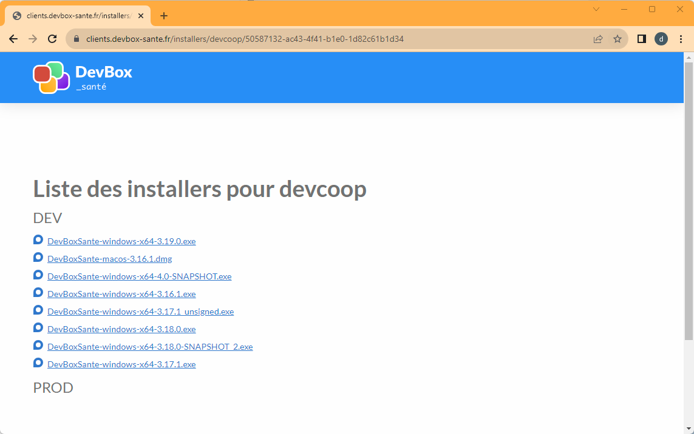
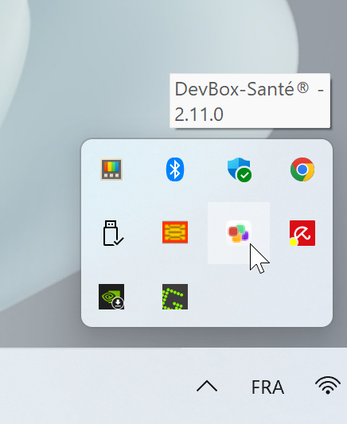
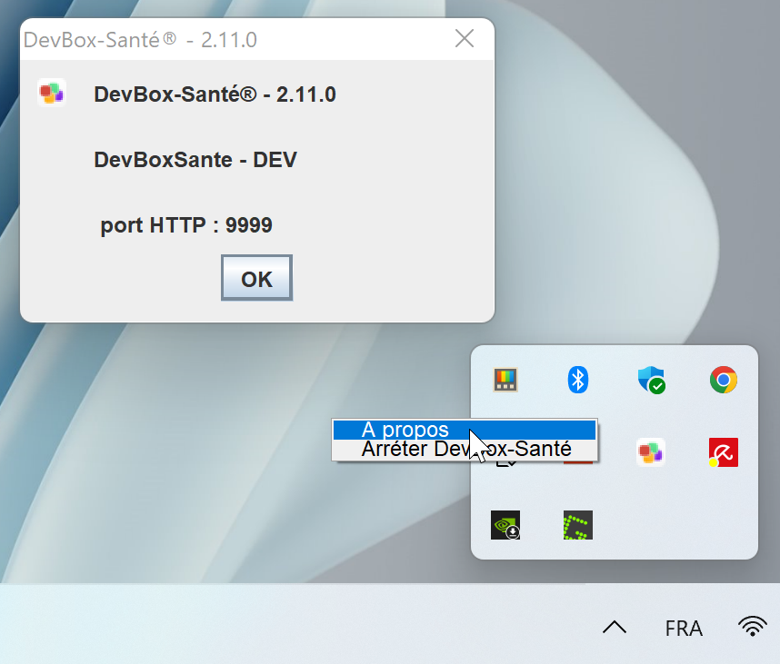
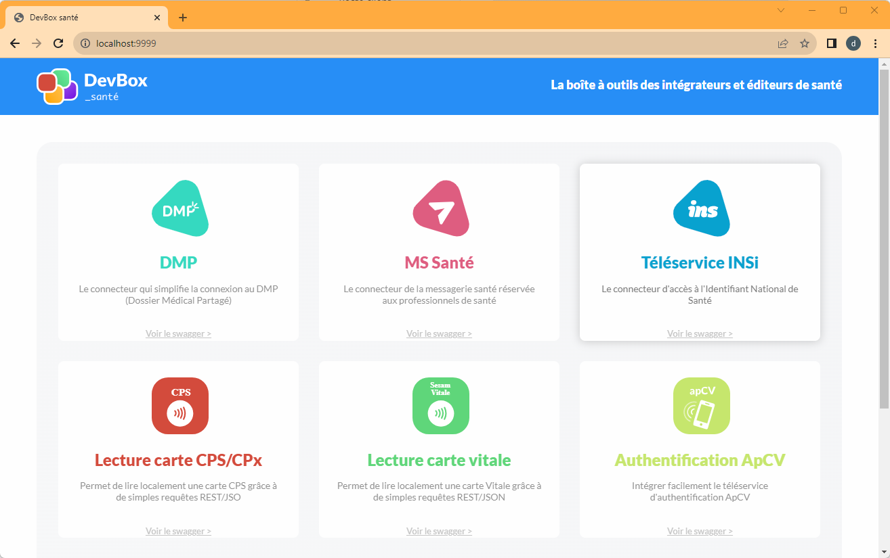
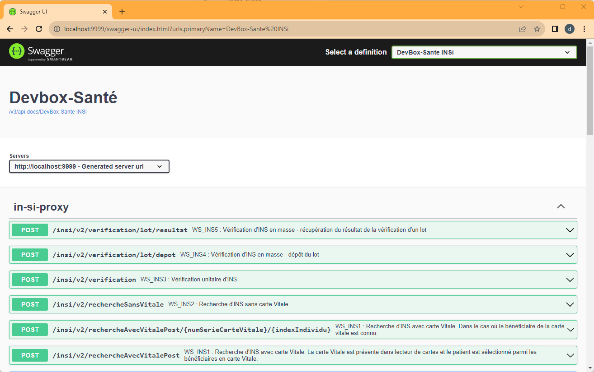
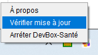

Premier Pas
Installation
Une fois que vous avez téléchargez le binaire sur l’url qui vous a été fournis :

Suivez les différentes étapes du programme d’installation et cliquez sur terminé. La DevBox-santé est lancée automatiquement sur un port pré-défini.
Sous Windows
La DevBox-santé est accessible dans la barre de tâches :

Un menu contextuel sur l’icône s’affiche sur un clic droit, permettant d’afficher des informations d’installation notamment le numéro de port :

Sous MacOS
TODO
Exécution sur l’environnement de démonstration
Une fois le numéro de port obtenu depuis la boîte de dialogue “À propos”, vous pouvez accéder à l’environnement de démonstration (pour une version de développement seulement) depuis votre navigateur : http://localhost:PORT

Ce qui vous permet de tester l’installation et d’observer les différentes requêtes possibles pour les différents composants.
Vous pouvez également vous jeter sur les différents documentation swagger à vos dispositions : http://localhost:PORT/swagger-ui/index.html

Après l’installation
Vérifier une mise à jour
Dans le menu contextuel de la barre des tâches, il est possible d’accéder à la vérification de la mise à jour automatique :

Obtenir les Logs
Le répertoire d’installation se présente comme celà :

Il est possible de récupérer dans le répertoire de log, et plus précisément output.log les traces d’exécution. Ce sont ces traces qui sont utiles pour diagnostiquer les éventuels problèmes d’intégration.
Mais aussi, dans une installation de développement les trames de message SOAP avec l’ensemble des téléservices sont récupérables. Ce sont ces dernières qui sont demandées pour preuve par le CNDA.
Comme dans cet exemple de log pour un appel INSi :
2022-02-08 10:17:17.371 INFO 32672 --- [nio-9999-exec-1] o.a.cxf.services.ICIRService.REQ_OUT : REQ_OUT
Address: https://qualiflps.services-ps.ameli.fr/lps
HttpMethod: POST
Content-Type: application/soap+xml; action="urn:ServiceIdentiteCertifiee:1.0.0:rechercherInsAvecTraitsIdentite"
ExchangeId: 1b180b89-d4d2-4e40-bd2c-1485b96c3105
ServiceName: ICIRServiceService
PortName: ICIRServicePort
PortTypeName: ICIRService
Headers: {Accept=*/*, Connection=Keep-Alive}
Payload: <soap:Envelope xmlns:soap="http://www.w3.org/2003/05/soap-envelope"><soap:Header><Action xmlns="http://www.w3.org/2005/08/addressing">urn:ServiceIdentiteCertifiee:1.0.0:rechercherInsAvecTraitsIdentite</Action><MessageID xmlns="http://www.w3.org/2005/08/addressing">uuid:fae22ada-31f7-4584-94bd-fb4ce305711c</MessageID><To xmlns="http://www.w3.org/2005/08/addressing">https://qualiflps.services-ps.ameli.fr/lps</To><ReplyTo xmlns="http://www.w3.org/2005/08/addressing"><Address>http://www.w3.org/2005/08/addressing/anonymous</Address></ReplyTo><ns6:Security xmlns:ns7="urn:siram" xmlns:ns6="http://docs.oasis-open.org/wss/2004/01/oasis-200401-wss-wssecurity-secext-1.0.xsd" xmlns:ns5="http://www.cnamts.fr/INSiRecSans" xmlns:ns4="http://www.cnamts.fr/INSiResultat" xmlns:ns3="urn:siram:bam:ctxbam" xmlns:ns2="urn:siram:lps:ctxlps" xmlns="http://www.cnamts.fr/INSiRecVit"><saml2:Assertion xmlns:xsd="http://www.w3.org/2001/XMLSchema" xmlns:saml2="urn:oasis:names:tc:SAML:2.0:assertion" ID="_cedba2ba-af67-43fa-836d-ba4f4c7ebd37" IssueInstant="2022-02-08T09:17:16.483Z" Version="2.0"><saml2:Issuer Format="urn:oasis:names:tc:SAML:1.1:nameid-format:X509SubjectName">GIVENNAME=ANNE + CN=899700296140 + SURNAME=MED-CS RPPS0029614, T=Médecin, C=FR</saml2:Issuer><ds:Signature xmlns:ds="http://www.w3.org/2000/09/xmldsig#">
<ds:SignedInfo>
<ds:CanonicalizationMethod Algorithm="http://www.w3.org/2001/10/xml-exc-c14n#"/>
<ds:SignatureMethod Algorithm="http://www.w3.org/2001/04/xmldsig-more#rsa-sha256"/>
<ds:Reference URI="#_cedba2ba-af67-43fa-836d-ba4f4c7ebd37">
<ds:Transforms>
<ds:Transform Algorithm="http://www.w3.org/2000/09/xmldsig#enveloped-signature"/>
<ds:Transform Algorithm="http://www.w3.org/2001/10/xml-exc-c14n#"><ec:InclusiveNamespaces xmlns:ec="http://www.w3.org/2001/10/xml-exc-c14n#" PrefixList="xsd"/></ds:Transform>
</ds:Transforms>
<ds:DigestMethod Algorithm="http://www.w3.org/2001/04/xmlenc#sha256"/>
<ds:DigestValue>kyudM3vGDu9c2+MzHnPoyocEYV5G9PtOfvZaZr8HTFI=</ds:DigestValue>
</ds:Reference>
</ds:SignedInfo>
<ds:SignatureValue>
m5WCwYjjqgCMfwoF34i4X1sHo5Qm9ZQ3pvDaj1ducPZRJqQCBohVUUKHne7qvwmeLP48bR2VMge0
...
AYgIW5NZvIU/DSiutXETfnuMnKyMhb5lsVrKLA==
</ds:SignatureValue>
<ds:KeyInfo><ds:X509Data><ds:X509Certificate>MIIIkjCCBnqgAwIBAgIQY9r/z8gDS9wvB2ErFSZ7ojANBgkqhkiG9w0BAQsFADB/MQswCQYDVQQG
EwJGUjETMBEGA1UECgwKQVNJUC1TQU5URTEXMBUGA1UECwwOMDAwMiAxODc1MTI3NTExFzAVBgNV
...
bP3Y2OtFuWfDXarPYW+3YMmMEJwboL+APfinsuS5tziDfoFKRMJf25o2SgNYOPNxnsTspW4P/x/2
Fdxj9tnROlPZfBxXLraunS7zw6uqjJS6iPHS80hoFHQ=</ds:X509Certificate></ds:X509Data></ds:KeyInfo></ds:Signature><saml2:Subject><saml2:NameID NameQualifier="CPS">899700296140</saml2:NameID></saml2:Subject><saml2:AttributeStatement><saml2:Attribute Name="codeSpecialite"><saml2:AttributeValue xmlns:xsi="http://www.w3.org/2001/XMLSchema-instance" xsi:type="xsd:string">SM26</saml2:AttributeValue></saml2:Attribute><saml2:Attribute Name="secteurActivite"><saml2:AttributeValue xmlns:xsi="http://www.w3.org/2001/XMLSchema-instance" xsi:type="xsd:string">SA05</saml2:AttributeValue></saml2:Attribute><saml2:Attribute Name="identifiantFacturation"><saml2:AttributeValue xmlns:xsi="http://www.w3.org/2001/XMLSchema-instance" xsi:type="xsd:string">123456789</saml2:AttributeValue></saml2:Attribute></saml2:AttributeStatement></saml2:Assertion></ns6:Security><ns2:ContexteLPS xmlns:ns7="urn:siram" xmlns:ns6="http://docs.oasis-open.org/wss/2004/01/oasis-200401-wss-wssecurity-secext-1.0.xsd" xmlns:ns5="http://www.cnamts.fr/INSiRecSans" xmlns:ns4="http://www.cnamts.fr/INSiResultat" xmlns:ns3="urn:siram:bam:ctxbam" xmlns:ns2="urn:siram:lps:ctxlps" xmlns="http://www.cnamts.fr/INSiRecVit" Nature="CTXLPS" Version="01_00"><ns2:Id>2f2cca2f-586a-4a5c-9b63-bf3a49b33aca</ns2:Id><ns2:Temps>2022-02-08T09:17:16.483Z</ns2:Temps><ns2:Emetteur>899700296140</ns2:Emetteur><ns2:LPS><ns2:IDAM R="4">DVB17HE21HW0</ns2:IDAM><ns2:Version>2.0</ns2:Version><ns2:Instance>0dc098f1-d47f-42f6-9f38-4ca148268ae7</ns2:Instance><ns2:Nom>urn:lps:DEVBOX_SANTE_INSI:2.0</ns2:Nom></ns2:LPS></ns2:ContexteLPS><ns3:ContexteBAM xmlns:ns7="urn:siram" xmlns:ns6="http://docs.oasis-open.org/wss/2004/01/oasis-200401-wss-wssecurity-secext-1.0.xsd" xmlns:ns5="http://www.cnamts.fr/INSiRecSans" xmlns:ns4="http://www.cnamts.fr/INSiResultat" xmlns:ns3="urn:siram:bam:ctxbam" xmlns:ns2="urn:siram:lps:ctxlps" xmlns="http://www.cnamts.fr/INSiRecVit" Nature="CTXBAM" Version="01_02"><ns3:Id>ef567c29-e980-41e3-b304-347dc70e5797</ns3:Id><ns3:Temps>2022-02-08T09:17:16.483Z</ns3:Temps><ns3:Emetteur>899700296140</ns3:Emetteur><ns3:COUVERTURE/></ns3:ContexteBAM></soap:Header><soap:Body><ns5:RECSANSVITALE xmlns="http://www.cnamts.fr/INSiRecVit" xmlns:ns2="urn:siram:lps:ctxlps" xmlns:ns3="urn:siram:bam:ctxbam" xmlns:ns4="http://www.cnamts.fr/INSiResultat" xmlns:ns5="http://www.cnamts.fr/INSiRecSans" xmlns:ns6="http://docs.oasis-open.org/wss/2004/01/oasis-200401-wss-wssecurity-secext-1.0.xsd" xmlns:ns7="urn:siram"><ns5:NomNaissance>DE VINCI</ns5:NomNaissance><ns5:Prenom>RUTH</ns5:Prenom><ns5:Sexe>F</ns5:Sexe><ns5:DateNaissance>1977-07-14</ns5:DateNaissance></ns5:RECSANSVITALE></soap:Body></soap:Envelope>
2022-02-08 10:17:17.872 WARN 32672 --- [nio-9999-exec-1] o.a.cxf.ws.addressing.soap.MAPCodec : Response message does not contain WS-Addressing properties. Not correlating response.
2022-02-08 10:17:17.873 WARN 32672 --- [nio-9999-exec-1] o.apache.cxf.ws.addressing.ContextUtils : WS-Addressing - failed to retrieve Message Addressing Properties from context
2022-02-08 10:17:17.874 INFO 32672 --- [nio-9999-exec-1] o.a.cxf.services.ICIRService.RESP_IN : RESP_IN
Address: https://qualiflps.services-ps.ameli.fr/lps
Content-Type: application/soap+xml; charset=utf-8
ResponseCode: 200
ExchangeId: 1b180b89-d4d2-4e40-bd2c-1485b96c3105
ServiceName: ICIRServiceService
PortName: ICIRServicePort
PortTypeName: ICIRService
Headers: {X-ORACLE-DMS-ECID=1360e356-5091-4ec5-8d19-dce653f132d7-00004557, content-type=application/soap+xml; charset=utf-8, Content-Length=940, Date=Tue, 08 Feb 2022 09:17:17 GMT}
Payload: <?xml version="1.0" encoding="UTF-8"?>
<soap:Envelope xmlns:soap="http://www.w3.org/2003/05/soap-envelope"><env:Body xmlns:S="http://www.w3.org/2003/05/soap-envelope" xmlns:env="http://www.w3.org/2003/05/soap-envelope"><ns2:RESULTAT xmlns:ns3="http://www.cnamts.fr/INSiRecVit" xmlns:ns2="http://www.cnamts.fr/INSiResultat" xmlns="http://www.cnamts.fr/INSiRecSans"><ns2:CR><ns2:CodeCR>00</ns2:CodeCR><ns2:LibelleCR>OK</ns2:LibelleCR></ns2:CR><ns2:INDIVIDU><ns2:INSACTIF><ns2:IdIndividu><ns2:NumIdentifiant>2770763220829</ns2:NumIdentifiant><ns2:Cle>10</ns2:Cle></ns2:IdIndividu><ns2:OID>1.2.250.1.213.1.4.8</ns2:OID></ns2:INSACTIF><ns2:TIQ><ns2:NomNaissance>NESSI</ns2:NomNaissance><ns2:Prenom>RUTH</ns2:Prenom><ns2:ListePrenom>RUTH ISABELLE</ns2:ListePrenom><ns2:Sexe>F</ns2:Sexe><ns2:DateNaissance>1977-07-14</ns2:DateNaissance><ns2:LieuNaissance>63220</ns2:LieuNaissance></ns2:TIQ></ns2:INDIVIDU></ns2:RESULTAT></env:Body></soap:Envelope>